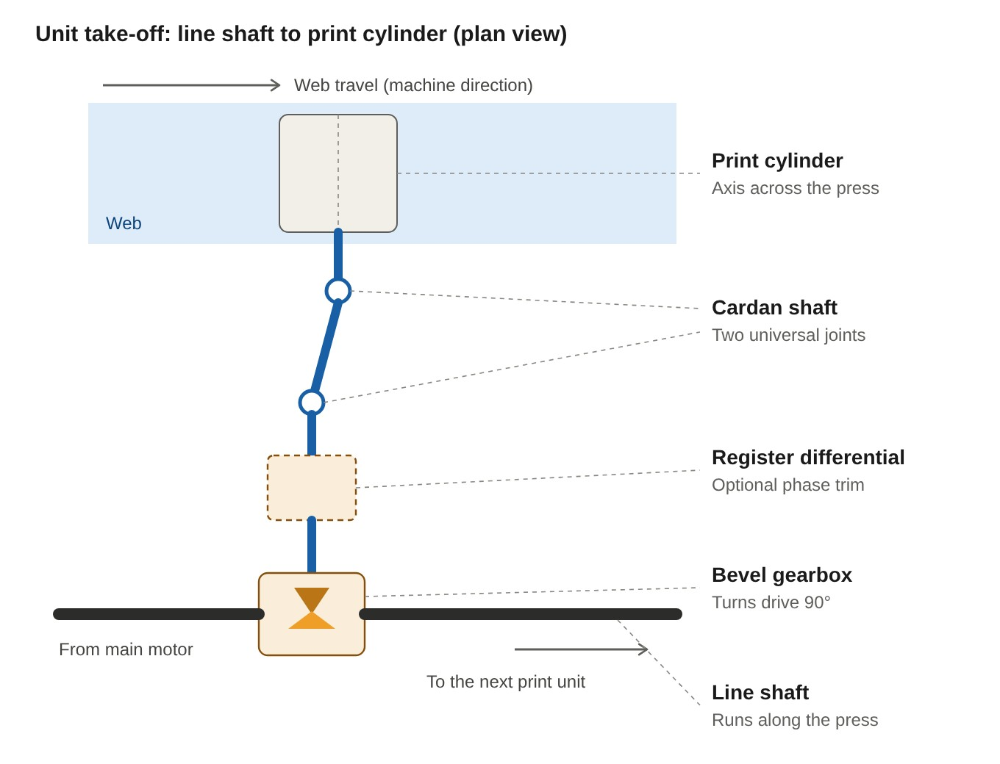
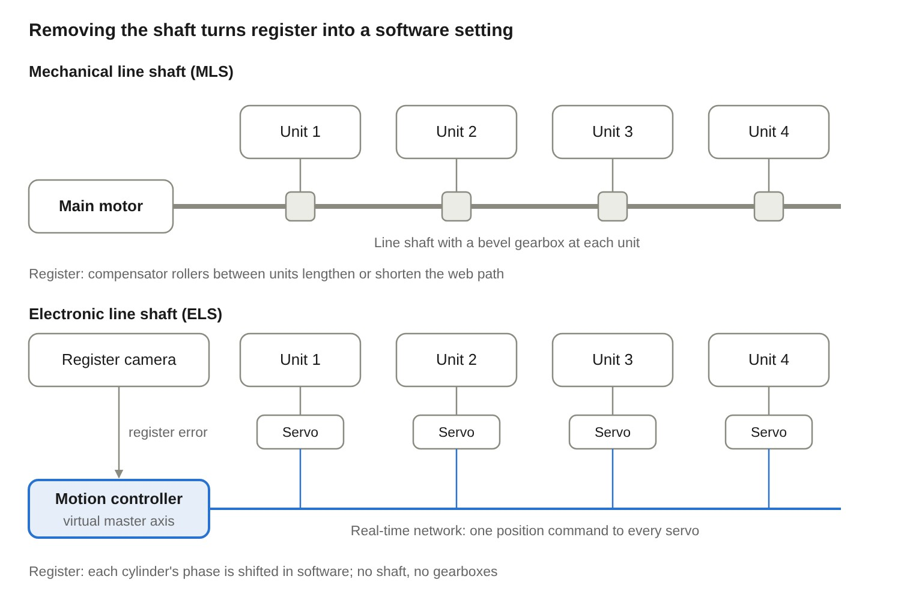

Mechanical and Electronic Line Shafts in Gravure Printing: History, Evolution and Current Trends
K Vijay Anand
Technical Paper No. 07 · 13 November 2026 · haivijayanand.github.io/papers
Abstract—The electronic line shaft (ELS) has replaced the mechanical line shaft (MLS) as the reference drive architecture for new high-speed rotogravure presses, while MLS presses remain in wide use in cost-sensitive markets. This paper traces how gravure presses came to be synchronized by a single rotating steel shaft, why that shaft limited register accuracy, makeready and flexibility, and how servo drives, digital motion networks and the virtual master axis made it possible to remove it. The two architectures are compared on engineering and economic terms, migration paths for converters are set out, and current trends are reviewed: integrated predictive register control, sleeve-based short-run gravure, energy recovery, connectivity, and competitive pressure from flexographic and digital printing.
Index Terms—Electronic line shaft, gravure printing, motion control, register control, rotogravure, servo drives, shaftless drive, web handling.
I. Introduction
A multi-color rotogravure press is only as good as its register: every color must land on the web within a fraction of a millimeter of the colors before it. In a typical flexible-packaging press, 8 to 10 print units sit in line, each separated by a dryer and several meters of web. The print cylinders must turn in a fixed phase relationship to each other while the web stretches, shrinks and changes tension between them.
The device that holds those cylinders in step is the line shaft. In its original form it is a literal steel shaft running the length of the press, driven by one main motor and geared to every print cylinder. In its modern form it is an electronic line shaft: no shaft at all, but a motion controller that generates a master position signal and commands an individual servo motor on each cylinder to follow it. The following terms are used in this paper.
Mechanical line shaft (MLS): a single motor and a continuous shaft with bevel or worm gearbox take-offs to each print unit; also called shafted or line-shaft drive.
Electronic line shaft (ELS): each print cylinder, and usually each web-handling roller, has its own servo motor, synchronized by a real or virtual master over a motion network; also called shaftless, gearless or sectional drive.
Longitudinal (circumferential) register: the machine-direction alignment of one color to the previous one; the main quantity a line shaft must protect.
Lateral (side) register: cross-direction alignment, corrected by moving the cylinder or the web sideways.
II. History: From Intaglio Plate to the Shafted Press
Rotogravure was industrialized in the 1890s, and for most of the following century its presses were synchronized by a single mechanical shaft. Gravure descends from intaglio engraving; the key step was Karl Klíč's move from flat plates to engraved copper cylinders around 1879, building on Fox Talbot's photographic screen [1]. Klíč and Samuel Fawcett, with the Storey Brothers of Lancaster, formed the Rembrandt Intaglio Printing Company in 1895 and kept the process secret until an employee carried it to the United States in 1903 [2]. Table I lists the early milestones [1]–[6].
As presses grew from one or two units to eight, ten or more, the natural way to keep every cylinder in step was the factory's own transmission idea: one prime mover and one shaft. From the 1950s to the 1980s, the line shaft became the backbone of publication and packaging gravure, first with DC main motors and later with AC motors under vector control [7]. Unwind, infeed, outfeed and rewind sections were progressively split off onto their own drives, while the print units stayed on the shaft.
TABLE IEarly Milestones of Rotogravure
Year
Milestone
1852
Fox Talbot describes a textile screen for photographic half-tones [1]
1860
French patent describes a reel-fed gravure press [3]
c. 1879
Klíč engraves copper cylinders instead of plates; rotary gravure is born [1]
1895
Rembrandt Intaglio Printing Company founded in Lancaster [4]
1905–06
Klíč achieves three-color rotogravure; color gravure prints marketed [4]
1910
Freiburger Zeitung becomes the first daily to print letterpress and rotogravure together [5]
1950
Cerutti builds its first rotogravure press, for Mondadori [6]
III. The Mechanical Line Shaft
The mechanical line shaft is a simple, robust way to hold every print cylinder at the same speed, but it cannot hold them at exactly the same phase. Its accuracy is limited by the stiffness, backlash and wear of a long mechanical chain, and register is corrected indirectly by stretching or shortening the web.
A. Architecture
Main motor and main gearbox: one motor, historically DC and today usually an AC motor on a vector drive, drives the whole printing section.
Line shaft: a continuous steel shaft runs the length of the press on the drive side, supported in plummer blocks, often in sections joined by flexible couplings.
Unit take-offs: at each print unit, a right-angle gearbox (spiral bevel or worm) and a cardan shaft or coupling transmit motion to the print cylinder (Fig. 1).
Impression roller and web: the rubber impression roller and chill rollers are driven by friction from the cylinder and web; infeed, outfeed, unwind and rewind are usually on separate sectional drives.
Register actuators: a motorized compensator roller between units lengthens or shortens the web path to move the image in the machine direction; some designs add a differential or phase-shifting gearbox in the take-off to advance or retard the cylinder directly. Lateral register moves the cylinder axially.
Register control: a scanning head reads register marks and a controller drives the compensator motors in closed loop.

Fig. 1. Unit take-off on a mechanical line shaft press (plan view): a bevel gearbox turns the line shaft's drive through 90°, an optional register differential trims the phase, and a cardan shaft with two universal joints drives the print cylinder.
B. How Register Is Held
The shaft fixes all cylinders to one angular speed, so nominal register is set by mechanical phasing at makeready. During the run, the register controller corrects errors caused by web stretch, tension changes and cylinder diameter differences by moving compensators. Moving a compensator also changes the tension in that web span, and the disturbance propagates to downstream units, which then react in turn [8]. Dynamic models of shaft-coupled print units capture these interactions among cylinder, doctor blade, compensator roller and drive [9].
C. Limitations
Torsional wind-up: the long shaft acts as a torsion spring. Each unit's load (doctor-blade friction, ink drag, bearing drag) twists it differently, and the twist changes with speed, so register drifts during acceleration and deceleration. Converters moving from line shaft to servo drives report this as a primary motivation [10].
Backlash and wear: gear mesh, keyways, splines and couplings add lost motion that grows with age, adding register noise that no controller fully removes (Section III-D).
Torsional and lateral vibration: the shaft, couplings and gear mesh form a lightly damped system with resonances that can appear at particular press speeds, visible as periodic register error or banding.
Coupled web tension: compensator moves disturb tension, so register and tension control fight each other, especially on extensible films.
Long web paths: compensators and their idlers lengthen the web between units, increasing start-up waste and requiring the ink to be fully dry before contact.
Fixed configuration: a unit cannot run independently of the shaft for cleaning or cylinder change while the line runs, and adding or relocating units is a mechanical rebuild.
Maintenance load: gearboxes, couplings and bearings need lubrication, alignment checks and periodic replacement; the press is noisier.
D. Backlash in the Take-Off and Its Control
Every element of the take-off in Fig. 1 contributes lost motion between the line shaft and the cylinder.
Bevel gears: gear pairs are cut with deliberate tooth clearance for thermal growth and the oil film, and flank and bearing wear add to it over the years. It is controlled by specifying a higher accuracy grade (ISO 1328 or AGMA) and buying lapped or ground spiral-bevel pairs as matched sets; by setting the mesh with shims at the pinion and gear mounting distances, checked with a dial indicator and a contact-pattern test; by preloading taper-roller or angular-contact bearings so that the shafts cannot float and open the mesh; and, where precision matters, by low-backlash gearboxes rated in arc-minutes or split, spring-loaded anti-backlash gears. Backlash only shows when torque reverses. The steady drag of the doctor blade and impression keeps the teeth on one flank during the run, so the problem appears mainly during acceleration, braking and stops.
Cardan shafts: a cardan shaft has clearance in the needle bearings of its cross trunnions and between the teeth of its telescoping spline. It also has a separate effect that is not backlash: a single universal joint running at an angle transmits a speed that rises and falls twice per revolution, which would appear directly as register error. Engineers cancel this ripple with two joints whose yokes are in phase and whose working angles are equal (a Z or W arrangement), keep those angles small, and specify close-tolerance or preloaded cross bearings and coated or ball splines. Where misalignment is small, a torsionally stiff disc or bellows coupling replaces the cardan altogether.
Across the press: some lost motion always remains and grows with wear, so MLS presses depend on closed-loop register control. The controller removes slow drift but cannot follow backlash crossings during speed ramps. Backlash is therefore checked at overhauls and watched through condition monitoring: rising gear-mesh sidebands, impacting, or register error that appears only during speed changes are typical signs. Removing the shaft, gearbox and cardan altogether is one of the main reasons the ELS holds register better.
E. Strengths That Keep It in Service
The MLS remains attractive where capital cost, simplicity and maintainability by mechanical technicians matter more than the last increment of register accuracy. It needs no motion network, has no electronic obsolescence risk, and keeps all units mechanically in step even during an emergency stop. Indian manufacturers still build and export MLS presses rated around 300 m/min for such markets [11].
IV. Evolution to the Electronic Line Shaft
Shaftless drive was proven on web offset newspaper presses in the early 1990s and reached gravure packaging presses within about a decade. Press makers had experimented with independently driven reelstands and units through the 1970s and 1980s; the turning point was the combination of brushless AC servo motors, digital drives, high-resolution encoders and deterministic motion networks [12].
A. Enabling Technologies
Servo motors and digital drives: permanent-magnet AC motors with absolute or high-count encoders, closed in position, speed and current loops inside the drive.
Motion networks: fiber-optic SERCOS was used by early shaftless presses to carry position commands from a central controller to each drive, with diagnostics and per-motor register offsets visible to the operator [13]. Later systems moved to PROFIBUS DP with motion profiles [10], then to Ethernet-based real-time networks.
Electronic gearing and camming: firmware that lets one axis follow a master at a programmable ratio and phase, so a servo can behave exactly like a gear on a shaft [14].
Integrated register control: camera or mark-sensor systems that write corrections straight into the cylinder phase rather than into a compensator motor.
B. Milestones
Table II summarizes the transition. Adoption was not uniform. Early debate centered on reliability, since one failed motor could stop a unit, and on the higher and different skills needed to maintain shaftless presses [12]. Hybrid designs, with a motor per tower and a short shaft inside it, were offered as a middle path. In gravure, Japanese makers such as Orient Sogyo took a sectional AC-vector route that eliminates compensators while retaining their own drive philosophy [15].
TABLE IIMilestones in the Transition to Shaftless Drive
Period
Development
1970s–80s
Independently driven reelstands and early experiments with sectional drives [12]
1990
MAN Roland demonstrates a shaftless drive on a commercial press at drupa [12]
1993
Wifag offers individual AC gearless drive on its OF 370 newspaper press [12]
Mid-1990s
Shaftless presses from Wifag, MAN Roland, KBA and Goss sell across Europe, then North America and Asia [16]
Late 1990s–2000s
Narrow-web and packaging presses adopt fully servo drives; gravure makers introduce gearless packaging presses with direct cylinder drive [17]
2006
Pelican becomes the first Indian maker to build an ELS rotogravure press [18]
2014
Kohli Industries shows the E-Press-400, a 400 m/min ELS press marketed with Uteco [19]
2018
Pelican begins licensed Indian manufacture of the Cerutti R-982 with shafted and shaftless cylinder chucking [18]
2020
Kohli launches the Thea 9one8 shaftless press with Siemens ELS and BST-Eltromat register control [20]
2020s
Integrated “intelligent” line shafts combine ELS with predictive register control and register preset at standstill, e.g., BOBST ILS [21]
V. The Electronic Line Shaft
An electronic line shaft replaces the steel shaft with a position signal: a master axis, real or virtual, is broadcast over a real-time network, and every cylinder's servo drive follows it as if geared to a perfectly stiff shaft. Register is then corrected by shifting each cylinder's phase in software rather than by stretching the web. Fig. 2 contrasts the two architectures.

Fig. 2. MLS versus ELS drive architecture (four print units shown). In the MLS, one motor and one shaft drive every unit, and register is corrected through the web; in the ELS, each unit has its own servo following a common master, and register is corrected at the cylinder.
A. Architecture
Press PLC and HMI: sequencing, interlocks, job recipes and the line speed setpoint.
Master axis: usually a virtual master generated in the motion controller from the speed setpoint; alternatively a real encoder on a high-inertia roller or on an upstream machine [22].
Motion network: a deterministic fieldbus that delivers the master position to every drive each cycle. Network delay is compensated by predicting the master position one cycle ahead so that all axes act on the same command at the same instant [23].
Print cylinder axes: one servo per cylinder, either direct-drive (motor or torque motor on the cylinder shaft or chuck) or through a short, low-backlash gearbox or belt.
Web-handling axes: unwind, infeed, cooling rollers, outfeed and rewind, geared to the master with a tension trim so that each zone's tension is controlled independently.
Register control: mark sensors or cameras measure longitudinal and lateral error; corrections are written into the cylinder phase offsets and, in advanced systems, are predicted from measured web elongation before misregister appears [24].
B. Electronic Gearing
Each cylinder axis follows the master with a ratio and a phase offset:
θi(t) = (Rref / Ri) θm(t) + φi(t)(1)
where θm is the master position, Rref the reference radius that defines web speed, Ri the radius of cylinder i, and φi the register phase offset. Because Ri is a parameter, cylinders of slightly different diameters, or a different repeat length, are matched in software. Changing φi moves the image on the web without touching tension in the neighboring spans.
C. Register Correction Strategies
Electronic differential (phase advance or retard): the cylinder itself is moved; no compensator, shortest web path. Its response is limited by how quickly the web between units carries the change downstream.
Compensator roller retained on an ELS press: the web path is changed as before, but cylinders are electronically synchronized. Modeling work shows compensator control can outperform a simple electronic differential, while cascaded reference control lets the differential approach compensator performance [25].
Predictive or feed-forward register: elongation and tension changes are measured and corrected before an error appears, and register is preset at standstill from stored job data [21].
Supplier opinion has long agreed that an ELS does not remove the need for register control: the drives keep cylinders in step, but only web-side feedback can correct for substrate stretch and tension change [26].
D. What the ELS Makes Possible
Stiffer control loops: removing shafts, couplings and gears removes the spring in the drive train, allowing higher servo gains [27].
Register held through speed changes: every axis follows the same position command during ramps.
Automatic phasing at makeready: a scanning head on the first unit phases all cylinders into register at start-up, cutting waste [6].
Unit independence: a unit can leave line speed, for example to clear clogged cells, and rejoin in register [15].
Recipe recall: phase offsets, tensions and ratios are stored and reloaded for repeat jobs.
Diagnostics: each drive reports torque, following error and temperature, making the press observable.
VI. Comparison of the Two Architectures
Table III compares the architectures. The ELS wins on register stability, makeready, waste and flexibility; the MLS wins on capital cost, simplicity and the skill profile needed to keep it running.
TABLE IIIMechanical Versus Electronic Line Shaft
Criterion
Mechanical line shaft
Electronic line shaft
Synchronization
Physical shaft; same speed, phase disturbed by wind-up and backlash
Common position command; phase held by each servo loop
Register during speed ramps
Drifts as shaft twist changes
Held; all axes follow one ramp
Register actuator
Compensator roller (web path) or mechanical differential
Needs coordinated safe stop; a drive trip stops the line
Skills
Mechanical fitters
Drives, networks and controls engineers
Obsolescence riskb
Low
Drives and networks change every 10–15 years
Capital cost
Lower
Higher (one servo axis per cylinder and roller)
aIndian press makers' published exports and installations [11]. bTypical industry planning figure, not a sourced statistic.
VII. Retrofit and Migration Paths
For most converters the choice is not “shaft or no shaft” but how far along a staged path to go, matched to job mix and in-house skills.
Modernize the MLS: replace the DC main drive with an AC vector drive, and fit a digital register controller and sectional servo drives on unwind, infeed, outfeed and rewind. Lowest cost; removes the worst tension problems but not shaft wind-up.
Hybrid shaft-plus-servo: keep the line shaft for base synchronization and add a servo phase corrector or differential at each unit take-off, so register is corrected at the cylinder instead of through the compensator. Indian makers have offered MLS presses with servo technology to export-grade converters [28].
Full ELS conversion: remove the shaft and gearboxes and fit a servo per cylinder with a motion controller and network. Practical only where the frame, cylinder mounting and electrical infrastructure justify it; often close to the cost of a new press.
New ELS press: the usual route for 400–450 m/min capacity, frequent changeovers or extensible films.
A. The Indian Flexible-Packaging Context
Gravure remains the backbone of Indian flexible packaging, with more than ten new gravure presses installed for every new CI-flexo press, and likely over a hundred gravure installations a year [11]. Local makers such as Pelican, Kohli, UFlex, C Trivedi and Mohindra supply most of them, with a few high-speed imports from BOBST and W&H. Both architectures are offered side by side: Kohli, for instance, sells its Rhea series with mechanical line shaft and its Thea series with ELS [29]. Before choosing, a converter should answer the following questions.
What share of jobs are short or repeat runs that would gain from recipe recall and automatic phasing?
How extensible are the main substrates (thin PE, CPP, BOPP), and how tight are customers' register tolerances?
Does the plant have drives and network engineers, or a reliable service contract within reach?
How clean is the plant's power supply, and is there an earthing and EMC plan for many servo drives?
What will spares and drive replacement cost over a 15–20 year press life?
VIII. Current Trends
The line shaft debate is largely settled for new high-end presses; the current contest is over makeready time, waste and energy, because shrinking run lengths expose gravure's weakest point. Smithers estimates the combined flexographic and gravure market at about US$358.5 billion in 2026 [30], and judges gravure more vulnerable than flexo on short runs because of long makereadies and cylinder cost [31]. The market for gravure printing machines itself is forecast to grow only slowly, from about US$3.46 billion in 2026 to US$3.67 billion by 2031, with flexible packaging about 55% of it and Asia-Pacific about 42% [32].
Integrated, predictive line shafts: drive and register control are merged; register is preset at standstill from job data, and elongation is corrected before it shows [21], [24].
Short-run gravure with sleeves: lightweight engraved sleeves changed from the side of the press let units sit closer together, which with ELS shortens the web path and set-up waste [33]. Shaftless direct drive to the sleeve is now offered on dedicated short-run presses [17].
Automated changeover: trolley systems carry the next cylinder and ink pan to each unit while the press washes up and swaps cylinders automatically; robotic cylinder handling and machine-learning set-up are emerging [6], [34].
Extended color gamut: a fixed set of inks replaces spot colors, so several SKUs can run with fewer cylinder and ink changes [35].
Lower gravure–flexo crossover: analysts put the run length at which gravure beats flexo near 5000 m² on automated presses [32].
Energy and solvent recovery: dryers dominate press energy; servo-controlled dampers that recirculate dryer air and high-efficiency ventilation are now standard selling points [36]. Servo drives also allow regenerative braking on a common DC bus.
Connectivity and monitoring: OEM platforms collect drive, energy and performance data for remote support and benchmarking; each servo axis is a built-in sensor of torque, following error and temperature.
Cleaner cylinder making: trivalent-chromium plating such as HelioChromeNEO is offered to replace hexavalent chromium trioxide [11].
Made-in-India ELS: Indian makers now export 400–450 m/min ELS presses to the Middle East and Africa while continuing to sell MLS presses where cost dominates [11].
IX. Engineering Considerations
An ELS moves the press's critical tolerances from the gear train into the drive tuning, the network and the web; each needs deliberate design.
A. Drive Sizing and Inertia
Each cylinder servo should be sized for the doctor-blade and impression drag at full speed plus the acceleration torque of the heaviest cylinder or sleeve the press will carry. A low load-to-motor inertia ratio, or a direct-drive torque motor, lets the position loop be tuned stiff without oscillation. The change in inertia between a steel base cylinder and a lightweight sleeve must be considered, since one tuning set may not suit both.
B. Network and Timing
The motion network's cycle time and jitter must sit well inside the register budget at maximum speed; at 450 m/min the web moves 7.5 mm every millisecond. Network delay should be compensated by predicting the master position, with all drive clocks synchronized. Earthing, shielding and cable segregation must be planned for many PWM drives in a solvent-laden, ATEX-classified environment.
C. Web Tension Zoning
Tension zones between driven rollers should each be controlled with load cells or dancers; without compensators, tension and register are decoupled only if the zones are. Register and tension loops should be tuned to different bandwidths so that they do not fight. Starting tension values for each zone are given in Technical Paper No. 06 of this series.
D. Safety and Fault Handling
A coordinated safe stop, with all axes ramping down together on one master, and safe torque off per axis are required. Behavior on a single-drive fault must be defined: stop the line, or let other units continue with the faulty unit disengaged.
E. Condition Monitoring
On MLS presses, vibration monitoring of the line-shaft bearings, take-off gearboxes and couplings should attend to gear-mesh and shaft-rotation orders and to torsional resonances at particular speeds. On ELS presses, each axis's torque, following error and motor temperature should be trended: rising torque at constant speed flags doctor-blade, bearing or cylinder problems, and growing following error flags mechanical looseness or tuning drift. On both, logging register error against speed and job lets register problems be traced to mechanics, drives or substrate.
X. Conclusion
The electronic line shaft is now the default for new high-speed gravure presses, and the mechanical line shaft survives as the economical choice where runs are long, speeds moderate and drives expertise scarce. The shaft gave gravure a century of reliable synchronization, but its wind-up, backlash and reliance on compensators set a floor on register accuracy and makeready waste. Replacing it with a position signal made register a software quantity, shortened web paths and allowed recipes, automatic phasing and unit independence.
The next gains will come less from the drive architecture itself than from what is built on it: predictive register, sleeve-based quick change, robotic cylinder handling, energy-efficient drying and data-driven maintenance. These will decide whether gravure holds its ground against flexo and digital as run lengths keep falling. For converters in growth markets such as India, a staged path from a modernized MLS to hybrid and full ELS lets investment follow the job mix.
Acknowledgment
This article was researched and drafted with the assistance of Claude, a large language model (LLM) developed by Anthropic. The AI tool was used for literature search, summarising sources, drafting text and preparing the figures. The author reviewed, edited and verified the content and takes full responsibility for it.
References
Library of Congress, “The rotogravure process,” Newspaper Pictorials: World War I Rotogravures, 1914–1919. [Online]. Available: https://www.loc.gov/collections/world-war-i-rotogravures/articles-and-essays/the-rotogravure-process/
Encyclopaedia Britannica, “Printing: Gravure and rotogravure (1890s).” [Online]. Available: https://www.britannica.com/topic/printing-publishing/Typecasting-compositors-1880s
Princeton Univ. Graphic Arts Collection, “First American rotogravure section, December 1912,” Dec. 2017. [Online]. Available: https://graphicarts.princeton.edu/2017/12/25/first-american-rotogravure-section-december-1912
N. Coombes, “Rotogravure technology in a changing market,” Labels & Labeling. [Online]. Available: https://www.labelsandlabeling.com/features/rotogravure-technology-changing-market
“Basic specifications and unit structure,” Packaging South Asia. [Online]. Available: https://packagingsouthasia.com/technology/basic-specifications-and-unit-structure
“Method for register correction of a processing machine, and a processing machine,” U.S. Patent 8 027 747. [Online]. Available: https://image-ppubs.uspto.gov/dirsearch-public/print/downloadPdf/8027747
“Modeling and analysis of rotogravure printing presses,” Oklahoma State Univ., Stillwater, OK, USA. [Online]. Available: https://shareok.org/handle/11244/321977
“Ward/Kraft sees future in servo technology,” A3 Motion Control. [Online]. Available: https://www.automate.org/motion-control/news/ward-kraft-sees-future-in-servo-technology
N. Khanna, “Gravure update and the slow appeal of sustainability,” Packaging South Asia, Sep. 3, 2025. [Online]. Available: https://packagingsouthasia.com/type-of-packaging/flexible-packaging/flexo-gravure/gravure-sustainability/
J. Rosenberg, “The state of shaftless,” Editor & Publisher. [Online]. Available: https://www.editorandpublisher.com/stories/the-state-of-shaftless-p26,99217
L. Teschler, “Broader appeal for narrow webs,” Machine Design. [Online]. Available: https://www.machinedesign.com/archive/broader-appeal-narrow-webs
“Line shafting mechanical and electronic,” Machine Design, May 1, 2010. [Online]. Available: https://www.machinedesign.com/mechanical-drives/line-shafting-mechanical-and-electronic
Orient Sogyo Co., Ltd., “Sectional drive system Type VLS.” [Online]. Available: https://orientsogyo.co.jp/en/?p=508
P. Covell, “Drupa proved fertile ground for converters interested in gravure,” NS Packaging. [Online]. Available: https://www.nspackaging.com/?p=43824
R. Aravkar, “Pelican introduces made-in-India Cerutti R-982,” PrintWeek India, Feb. 8, 2018. [Online]. Available: https://www.printweek.in/news/pelican-introduces-india-cerutti-982-28001
“Kohli, Uteco show new E-Press-400 gravure machine,” Packaging South Asia, 2014. [Online]. Available: https://packagingsouthasia.com/zarchive/kohli-uteco-show-new-e-press-400-gravure-machine
“Thea 9one8 shaftless ELS rotogravure printing press,” Packaging South Asia, 2020. [Online]. Available: https://packagingsouthasia.com/?p=55664
BOBST, “LEMANIC RIVIERA ILS – Intelligent Line Shaft.” [Online]. Available: https://www.bobst.com/usen/products/gravure-printing/gravure-printing-presses/features/machine/lemanicr-riviera-ils
“Motion control puts ink to paper,” A3 Motion Control. [Online]. Available: https://www.automate.org/motion-control/industry-insights/motion-control-puts-ink-to-paper/boa
“Electronic line shaft with phased lock loop filtering and predicting,” U.S. Patent 7 417 392. [Online]. Available: https://image-ppubs.uspto.gov/dirsearch-public/print/downloadPdf/7417392
BOBST, “Registron S 6100 integrated register control system.” [Online]. Available: https://www.bobst.com/cn/en/products/related/registron-s-6100
“Machine direction registration dynamics model of a rotary printing press,” Oklahoma State Univ., Stillwater, OK, USA. [Online]. Available: https://shareok.org/handle/11244/322060
S. Friedman, “What's my line? Experts debate the role of electronic line shafts in register control,” Packaging Impressions. [Online]. Available: https://www.packagingimpressions.com/article/whats-my-line-15507/2
“Motion control puts ink to paper: Registration responses,” A3 Motion Control. [Online]. Available: https://www.automate.org/motion-control/industry-insights/motion-control-puts-ink-to-paper/aph
“Pelican's R982 gravure press,” Packaging South Asia. [Online]. Available: https://packagingsouthasia.com/?p=13347
N. Khanna, Ed., “Kohli Industries celebrates 50 years,” Packaging South Asia. [Online]. Available: https://packagingsouthasia.com/?p=68144
“Flexographic and gravure printing worth $358.5 bn in 2026,” The Packaging Portal, 2026. [Online]. Available: https://www.thepackagingportal.com/?p=37424
S. Smyth, “Flexo vs gravure: five-year outlook,” WhatTheyThink, 2026. [Online]. Available: https://whattheythink.com/articles/129814-flexo-vs-gravure-five-year-outlook/
“Gravure rolls up its sleeves to do battle with flexo,” PFFC. [Online]. Available: https://www.pffc-online.com/print/1439-paper-gravure-rolls-sleeves
Smithers, “Flexo and gravure: A market outlook,” Mar. 2026. [Online]. Available: https://prd-b4f.smithers.com/resources/2026/march/flexo-and-gravure-a-market-outlook
BOBST, “BOBST is revolutionizing the gravure printing process with smartGRAVURE.” [Online]. Available: https://www.bobst.com/in/en/news/1715857201-bobst-is-revolutionizing-the-gravure-printing-process-with-smartgravure
“Pelican highlights Make in India at drupa 2024,” Packaging South Asia, 2024. [Online]. Available: https://packagingsouthasia.com/?p=98172